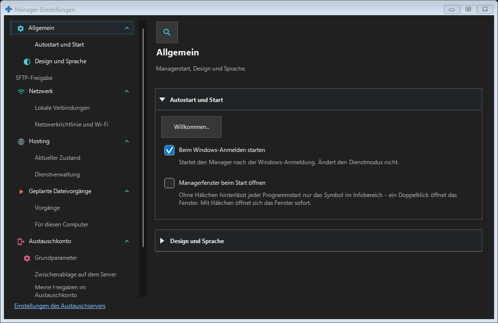
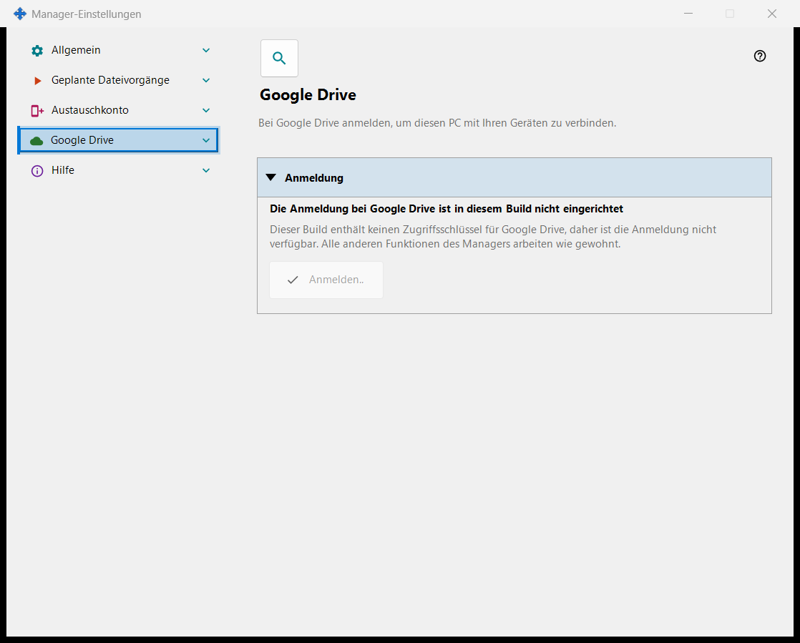
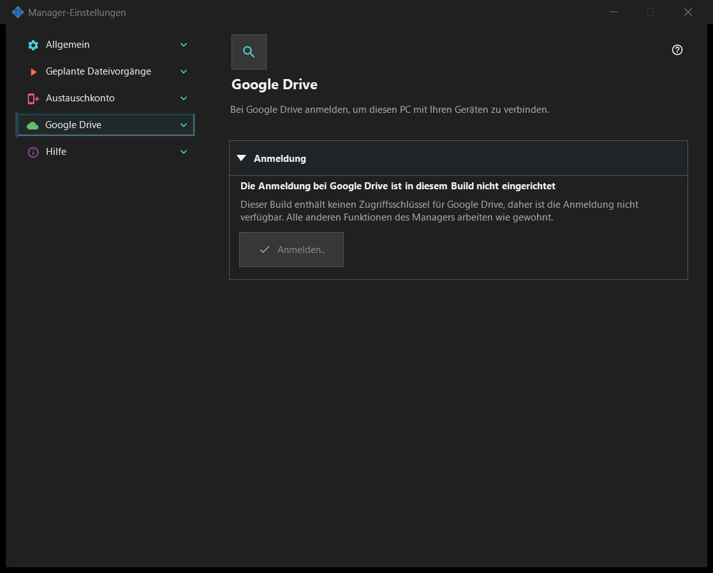

Managereinstellungen
Managereinstellungen
Verwendungszweck
Start, Design, Sprache, entferntes Austauschkonto, Veröffentlichung, Zwischenablage und geplante Dateiaktionen gehören zum Manager. Ein lokaler Server ist dafür nicht erforderlich. Ist die SFTP-Freigabe installiert, bilden ihre Seiten eine Gruppe in diesem Fenster.


In dieser Reihenfolge
Öffnen Sie die Einstellungen über das Tray oder die Komponentenlinks. Öffnen und Schließen starten oder stoppen keinen Server. Ein fehlender lokaler Server sperrt die entfernte Anmeldung nicht.
Die Elemente
Managereinstellungen
Start, Design, Sprache, entferntes Austauschkonto, Veröffentlichung, Zwischenablage und geplante Dateiaktionen gehören zum Manager. Ein lokaler Server ist dafür nicht erforderlich. Ist die SFTP-Freigabe installiert, bilden ihre Seiten eine Gruppe in diesem Fenster. Öffnen Sie die Einstellungen über das Tray oder die Komponentenlinks. Öffnen und Schließen starten oder stoppen keinen Server. Ein fehlender lokaler Server sperrt die entfernte Anmeldung nicht.
Managereinstellungen
Start, Design, Sprache, entferntes Austauschkonto, Veröffentlichung, Zwischenablage und geplante Dateiaktionen gehören zum Manager. Ein lokaler Server ist dafür nicht erforderlich. Ist die SFTP-Freigabe installiert, bilden ihre Seiten eine Gruppe in diesem Fenster. Öffnen Sie die Einstellungen über das Tray oder die Komponentenlinks. Öffnen und Schließen starten oder stoppen keinen Server. Ein fehlender lokaler Server sperrt die entfernte Anmeldung nicht.
Google Drive
- Öffnen Sie den Share Manager, öffnen Sie «Manager-Einstellungen» und wählen Sie die Seite «Google Drive». Sie brauchen ein Google-Konto und eine Internetverbindung. Die App Google Drive für Windows wird nicht benötigt, und Sie legen selbst kein Google-Projekt, keinen Schlüssel und keine Einstellung an.
- Klicken Sie auf «Anmelden..». Der Standardbrowser öffnet die Seite von Google: Wählen Sie das Konto, melden Sie sich dort an und bestätigen Sie den angezeigten Zugriff. Das Passwort wird nur auf der Seite von Google eingegeben, nie in dieser Anwendung. Dort können Sie die Anmeldung auch abbrechen oder den Zugriff verweigern; dann wird nichts gespeichert.
- Kehren Sie zum Share Manager zurück: Die fette Zeile zeigt «Bei Google Drive angemeldet», und Sie können den Browser-Tab schließen. Hat sich der Browser nicht geöffnet, prüfen Sie Ihren Standardbrowser und klicken Sie erneut auf «Anmelden..». Zeigt der Browser einen Fehler oder zeigt die Seite weiter «Warte auf die Anmeldung im Browser..», klicken Sie auf «Abbrechen» und melden Sie sich erneut an. Die Anmeldung bleibt auf diesem PC gespeichert: Nach dem Schließen des Share Managers, dem Abmelden von Windows oder einem Neustart des PCs wird sie ohne Browser wieder verwendet, solange der Zugriff bei Google gültig bleibt.
- Um mit einem anderen Gerät auszutauschen, melden Sie sich auch dort mit demselben Google-Konto an, und zwar auf der Seite Google Drive dieses Geräts: auf einem anderen PC in dessen Share Manager, auf einem Telefon in der Android-App. Geräte, die bei verschiedenen Google-Konten angemeldet sind, sehen einander nicht, und auf beiden Geräten wird eine Version der Anwendung mit der Seite Google Drive benötigt. Die Anmeldung allein überträgt nichts: Was über Google Drive läuft, beschreibt die Hilfe zur Zwischenablage, zu den geplanten Vorgängen und zur Gruppe «Warteschlange auf Google Drive».
- Die Anwendung fragt nur den Zugriff auf ihren eigenen versteckten Ordner in Ihrem Google Drive an (Bereich drive.appdata). Ihre anderen Dateien in Google Drive sieht, durchsucht und synchronisiert sie nicht, und sie erhält weder eine E-Mail-Adresse noch Profildaten. Was Ihre Geräte einander übergeben, belegt Speicherplatz in Ihrem Google Drive; die Gruppe «Warteschlange auf Google Drive» zeigt es und lässt Sie ein Paket löschen. «Auf diesem Gerät abmelden» löscht die Einträge dieses PCs aus dem versteckten Ordner, widerruft den Zugriff bei Google und löscht die auf diesem PC gespeicherte Anmeldung. Danach kann Google den Zugriff auch auf Ihren anderen Geräten beenden, die mit demselben Konto angemeldet sind; meldet eines davon, dass seine Anmeldung nicht mehr funktioniert, melden Sie sich dort erneut an. Um diesen PC wieder zu verbinden, klicken Sie auf «Anmelden..».
- Läuft etwas schief, sagt die Zeile unter dem Zustand, was passiert ist. Keine Verbindung oder ein Fehler von Google: Die Anwendung versucht es selbst erneut, Sie müssen nichts tun. Anmeldung abgebrochen oder Zugriff verweigert: Klicken Sie erneut auf «Anmelden..», wenn Sie möchten. Ein Konto, das von einer Organisation verwaltet wird, deren Administrator die Anwendung sperrt: Melden Sie sich mit einem anderen Google-Konto an oder fragen Sie den Administrator. Eine Meldung, dass die Anmeldung nicht mehr funktioniert: Der Zugriff wurde widerrufen oder ist abgelaufen, klicken Sie erneut auf «Anmelden..». Kein freier Speicherplatz in Ihrem Google Drive: Schaffen Sie Platz oder löschen Sie Pakete aus der Warteschlange. Das tägliche Upload-Limit: Warten Sie bis zum nächsten Tag. «Die Anmeldung bei Google Drive ist in diesem Build nicht eingerichtet» oder eine Meldung, dass der Anmeldeschlüssel dieser Installation nicht mehr akzeptiert wird: Installieren Sie die aktuelle Version der Anwendung von ihrer offiziellen Website; die übrigen Funktionen des Share Managers arbeiten in der Zwischenzeit.
Meldet diesen PC bei Ihrem eigenen Google-Konto an, damit die Anwendung ihren privaten versteckten Ordner in Ihrem Google Drive nutzen kann. Klicken Sie auf «Anmelden..»: Der Standardbrowser öffnet sich, Sie bestätigen den Zugriff bei Google, und Google sendet die Antwort über eine lokale Adresse an diesen PC zurück; danach können Sie den Browser-Tab schließen. Angefordert wird nur eine einzige Berechtigung: der Zugriff auf den eigenen versteckten Ordner der Anwendung in Ihrem Google Drive (Bereich drive.appdata). Die Anwendung kann keine anderen Dateien in Ihrem Google Drive sehen und erhält weder eine E-Mail-Adresse noch Profildaten. Erteilt Google einen anderen Zugriff als angefordert, wird die Anmeldung abgelehnt. Die fette Zeile zeigt den Zustand. «Nicht bei Google Drive angemeldet»: «Anmelden..» steht zur Verfügung; ist der Zugriff widerrufen oder abgelaufen, sagt das die Zeile darunter und fordert zur erneuten Anmeldung auf. «Warte auf die Anmeldung im Browser..»: Schließen Sie die Anmeldung im Browser ab oder klicken Sie auf «Abbrechen». «Bei Google Drive angemeldet»: Dieser PC ist mit Ihrem Google Drive verbunden; sein Name und seine Kurzkennung werden angezeigt. «Google Drive ist derzeit nicht verfügbar»: Die Zeile darunter nennt den Grund - keine Verbindung, das tägliche Upload-Limit erreicht, kein freier Speicherplatz auf Ihrem Google Drive oder ein Fehler von Google; bei fehlender Verbindung und bei einem Fehler versucht die Anwendung es selbst erneut. «Abmeldung von Google Drive..» erscheint, solange die Abmeldung läuft. «Auf diesem Gerät abmelden» stellt eine einzige Frage, die Standardantwort ist «Nein». Nach «Ja» wird der Zugriff bei Google widerrufen, werden die Einträge dieses PCs aus dem versteckten Ordner in Ihrem Google Drive gelöscht und wird das auf diesem PC gespeicherte Anmeldetoken gelöscht; eine Zeile unter den Schaltflächen nennt die Zahl der gelöschten Einträge oder meldet, dass Google den Widerruf nicht bestätigt hat - ihn können Sie dann in den Einstellungen Ihres Google-Kontos vornehmen. In einem Build ohne Google-Zugriffsschlüssel zeigt die Seite «Die Anmeldung bei Google Drive ist in diesem Build nicht eingerichtet», «Anmelden..» ist deaktiviert, und die übrigen Funktionen des Managers arbeiten wie gewohnt. Solange dieser PC angemeldet ist, funktionieren die Zwischenablage-Befehle des Share Managers auch über Google Drive, ein geplanter Vorgang kann «Über Google Drive» als Quelle oder Ziel verwenden, und die Ressourcenliste des Viewers zeigt die Ordner, die Ihre anderen Geräte dort veröffentlichen. Die Gruppe «Warteschlange auf Google Drive» zeigt, was Ihre Geräte einander übergeben und wie viel Speicherplatz das belegt; wählen Sie ein Paket aus und drücken Sie «Paket löschen», um es von Ihrem Google Drive zu entfernen. Über Google Drive werden Dateien und die Zwischenablage in Ihrem eigenen Google-Konto gespeichert, wie Ihre anderen Dateien auf Google Drive; kein Austauschserver ist beteiligt.


Managereinstellungen
Start, Design, Sprache, entferntes Austauschkonto, Veröffentlichung, Zwischenablage und geplante Dateiaktionen gehören zum Manager. Ein lokaler Server ist dafür nicht erforderlich. Ist die SFTP-Freigabe installiert, bilden ihre Seiten eine Gruppe in diesem Fenster. Öffnen Sie die Einstellungen über das Tray oder die Komponentenlinks. Öffnen und Schließen starten oder stoppen keinen Server. Ein fehlender lokaler Server sperrt die entfernte Anmeldung nicht.
Managereinstellungen
Wählen Sie unter Hilfe / Über das Programm die Aktion Protokolle zur Analyse exportieren. Gesammelt werden alle aufbewahrten lokalen Protokolle von Media Exchange Server, SFTP, Installation und Hilfsprogrammen sowie Manager und Betrachter, auch bei gestoppten Servern. Entfernte Protokolle werden nicht heruntergeladen. Geheimnisse werden entfernt; gekürzte, ausgelassene und unlesbare Quellen stehen in der Prüfung und machen das Archiv unvollständig. An den Autor senden öffnet Ihren Mailentwurf mit der geprüften ZIP; Sie senden selbst. Falls der Anhang nicht funktioniert, fügen Sie die ZIP manuell hinzu. Im Datei-Explorer anzeigen markiert die ZIP: Kopieren, Zielordner öffnen, Einfügen. Bei Fehlern können Sie den Pfad im Prüffenster markieren und kopieren. Nach Anzeige oder Mailanforderung bleibt das Archiv auch bei Mailabbruch erhalten. Abbrechen davor löscht es. Ein späterer Export entfernt unbenutzte Archive nach sieben Tagen; kopieren Sie die ZIP für längere Aufbewahrung. Über 20 MiB bleibt der Explorer verfügbar, die Mailübergabe ist deaktiviert.
Einstellungen des Austauschservers
Managereinstellungen · SFTP-Freigabeeinstellungen · Einstellungen des Austauschservers